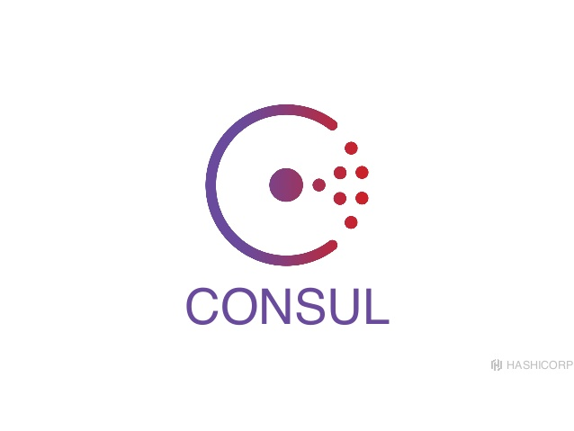

Microservice
Trade-offs
The design of software applications as suites of independently deployable services.
| Advantages | Disadvantages |
|---|---|
| Contracts & Boundaries | Distributed System |
| Independent Deployment | Eventual Consistency |
| Technology Diversity | Operational Complexity |
Martin Fowler: MicroservicePremium

Eventual consistency or distributed monolith
-
Two types of distributed monoliths
- Tight coupling via REST
- Required versions of platform libraries
-
Why eventual consistency is necessary
- Decoupling often requires events/messages
- Multi-service data projections are not "real-time"
Operational Complexity
|  | ||
Conway's Law
"Any organization that designs a system will inevitably produce a design whose structure is a copy of the organization's communication structure."
Harvard Business School Study of Conway's Law
Their study found that the often co-located, focused product teams created software that tended more towards tightly-coupled, monolithic codebases. Whereas the open source projects resulted in more modular, decomposed code bases.
Steve Yegge: ex-amazon employee rant
- Data only via services
- Interprocess communication via services
- Absolutely no other interprocess communication
- Technology doesn't matter
- All services are public
- Deviations result in termination
Netflix, Amazon, etc.
- Small teams
- Focused responsibility
- Complete lifecycle ownership
- Independent evolution
- Faster delivery
Resources & Bibliography
Martin Fowler - Microservice Trade-offs
https://martinfowler.com/articles/microservice-trade-offs.html
https://martinfowler.com/articles/microservice-trade-offs.html
Martin Fowler - Microservice Premium
https://martinfowler.com/bliki/MicroservicePremium.html
https://martinfowler.com/bliki/MicroservicePremium.html
Sam Newman - Demystifying Conway's Law
https://www.thoughtworks.com/insights/blog/demystifying-conways-law
https://www.thoughtworks.com/insights/blog/demystifying-conways-law